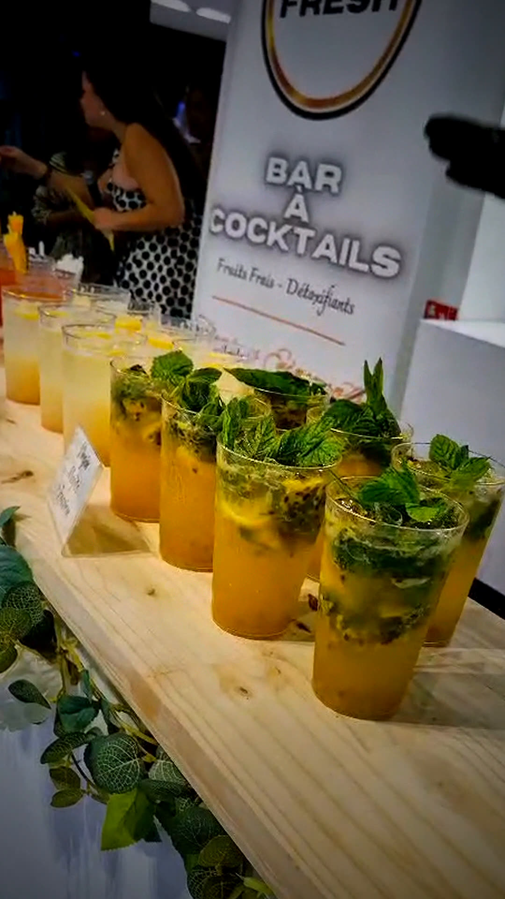
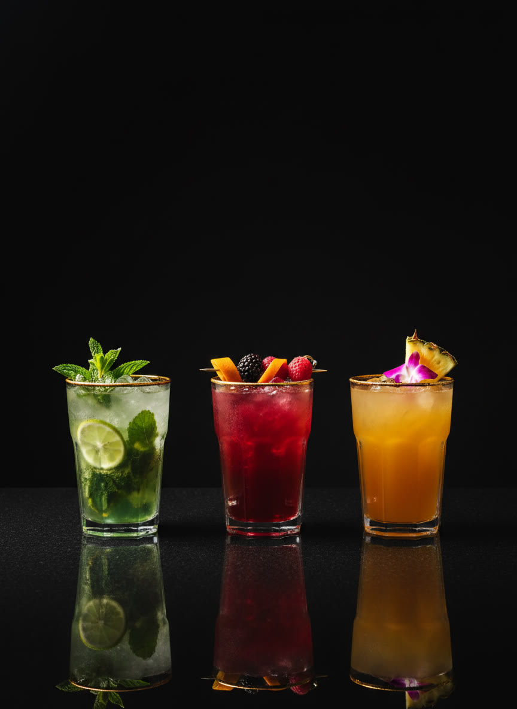
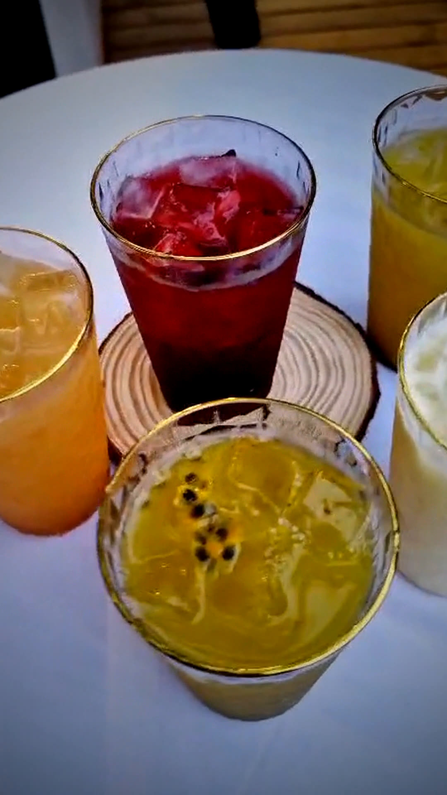
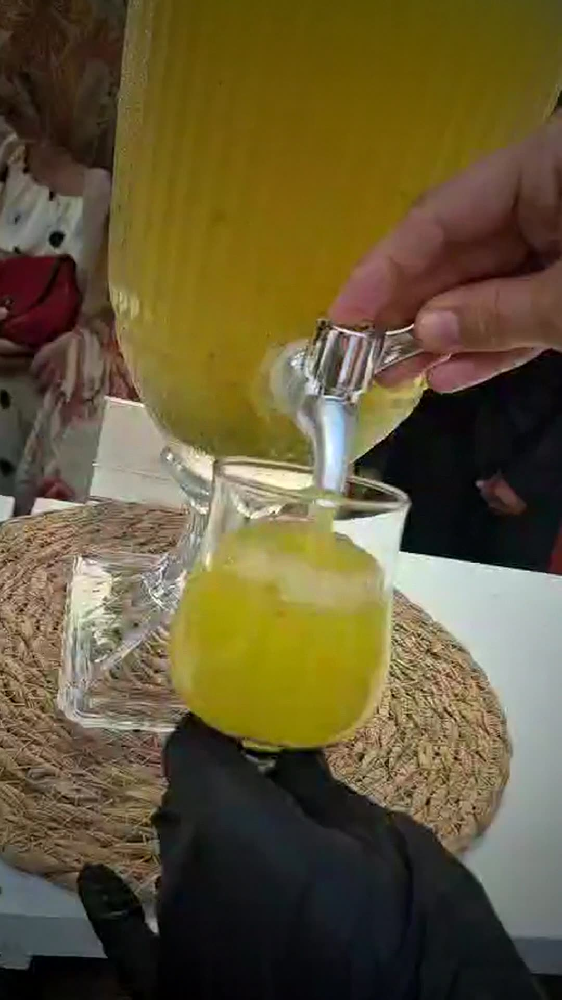
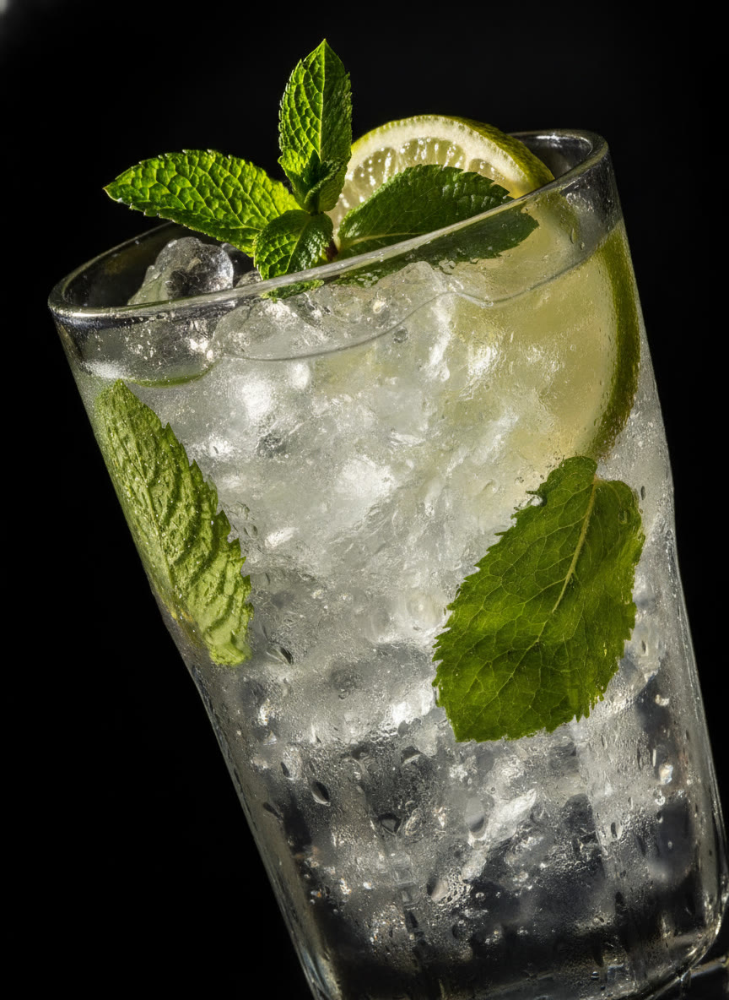
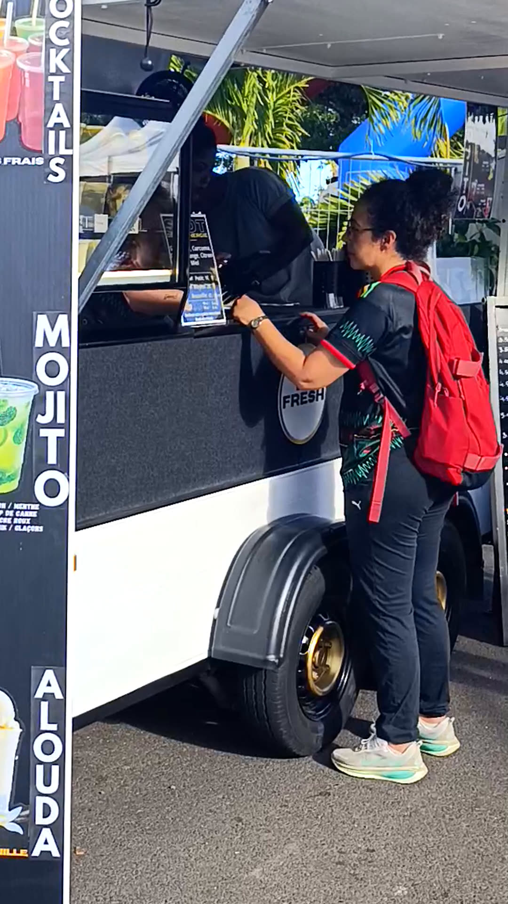

Bar à jus · La Réunion
Pour vos événements
Cocktails de fruits
frais & détoxifiants
Un bar sain pour des événements inoubliables.
Saint-Paul, Île de La Réunion
Frais.
Naturel.
Détox.
100 % plaisir
01Frais
& sain
& sain
02Naturel
& local
& local
03Sur-mesure
& pro
& pro
04Festif
& élégant
& élégant

Événements
Un bar sain
pour des événements
inoubliables
- Mariage
- Anniversaire
- Séminaire
- Salon
- Festival
Prestation « clé en main »
Au Parc des Palmiers.
- Préparé à la minute, sous vos yeux
- Sur-mesure & pro
- Festif & élégant


La carte
Menu
100 % fraîcheur
Jus signature
- TropicalAnanas · Mangue · Orange
- Green DetoxPomme · Concombre · Menthe
- Red EnergyPastèque · Fraise · Citron
- Passion FreshFruit de la passion · Orange
Smoothies
- Mango Dream
- Berry Mix
- Banana Boost
Mocktails
- Mojito fraise
- Virgin piña colada
- Tropical sunset
Extras
- Gingembre frais
- Menthe fraîche
- Citron vert
- Glace pilée

Fait-main
Préparé à la minute,
sous vos yeux
Frais · Fait · Délicieux
- Ingrédients locaux & de qualité
- Vitamines. Énergie. Bien-être.
- Naturel & local


Le bar mobile
Le bar
vient à vous
- Mojito
- Matcha
- Alouda
Parking Chaussée Royale, Saint-Paul
Contact
Réservez votre date
Tarifs sur devis
Adaptés à votre budget
Écrivez-nous pour votre événement.
befresh.eventsstc@gmail.comSaint-Paul, Île de La Réunion